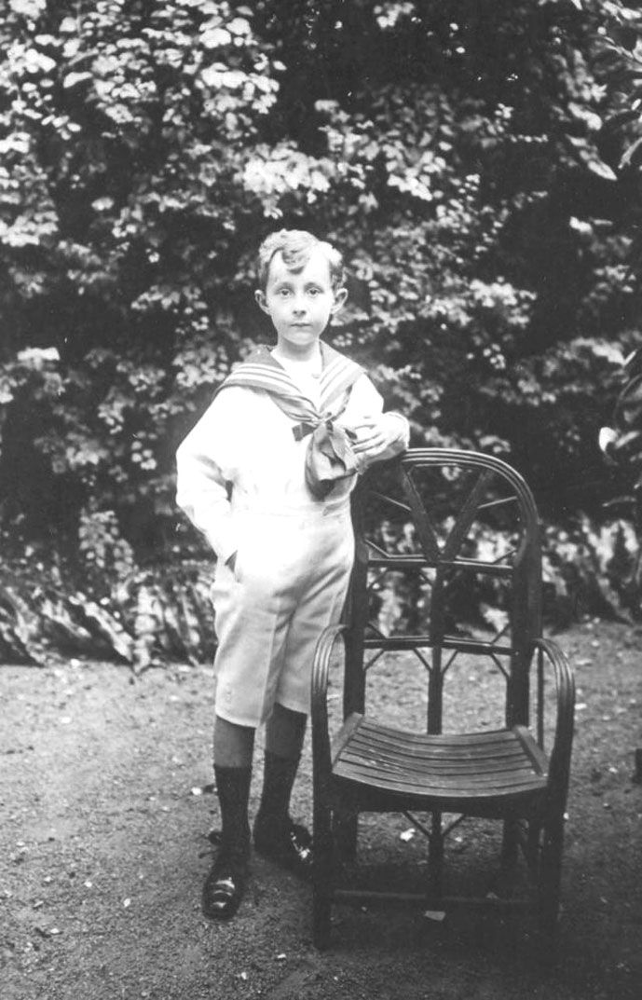
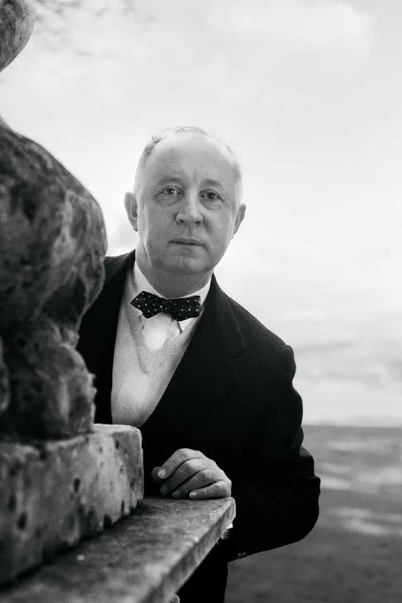
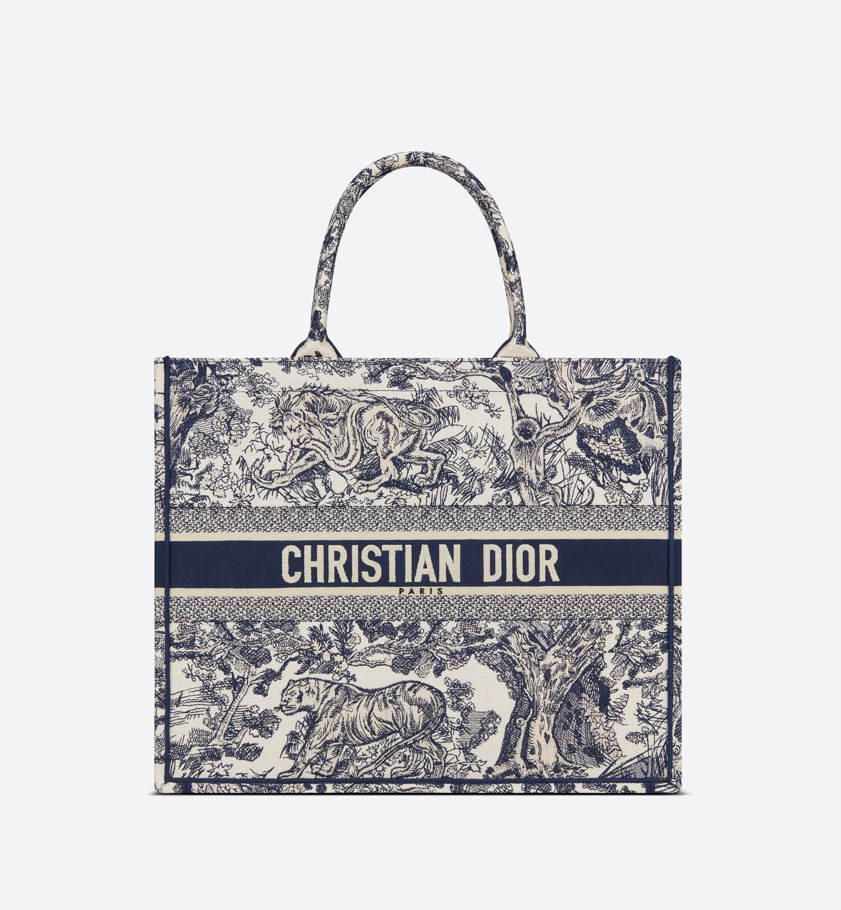
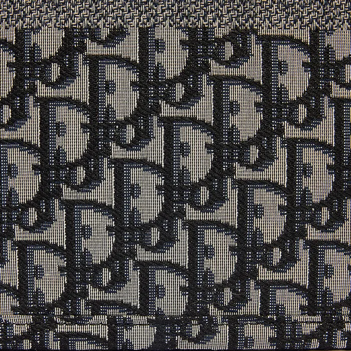

Life of Dior:
Early life
Christian Ernest Dior was born and raised in Normandy, France and moved to Paris with his parents when he was ten years old. He was one of seven children in his family and was the second born. His parents were Maurice and Madeleine in the town of Granville. Dior was always interested in art but his father insisted on a good education.
Mid Life
This was where he enrolled at the prestigious Ecole Des Sciences Politiques in Paris. He finished with degree in Politics which prepared him for the next step in his life. Dior always wished to be a diplomat.

Late Life
Dior was and continues to be an extremely successful designer. But sadly on the date of October 23, 1957, during his travels to Italy in the town of Montecatini he suffered his third heart attack of his lifetime and died, at the age of 52.
Dior's Work:
Lady Dior
"Its timeless beauty lies in the bag's easy-to-use rounded handles and soft lambskin leather. Besides, the brand's signature Cannage motif is also an attraction for fashion lovers."

New Look
The New Look (also known as the Bar) praised women's fashion's extreme femininity and luxury with rounded shoulders, a tight waist, and a very voluminous skirt. After years of stylistic limitations, rationing, and military and civilian uniforms, Dior gave not just a fresh appearance but also a fresh perspective.

Book Tote
The shape's simplicity, the exquisite craftsmanship and overall design embody everything that the Dior brand stands for. This bag quickly rose to popularity among stylish travelers, influencers, celebrities, and handbag lovers once it was released.


Dior's Style:
Dior's Style
Dior is a luxury craftman that is known for his oblique patterns. He has an aesthetic consisting of: "romantic, lavish, elaborate, and feminine." His brand is also associated with the words "iconic, fashionable, glamorous, emblematic and inimitable."
Dior's Impact
Christian Dior is known to be a creative and successful designer. I love to ultilize my creativity in everything that I do so Dior truly inspires me. As I learned his backstory I noticied that we had more things in common than I orignally believed. At the beginning of his journey, he struggled to find the path that he wanted to take but as he got older he learned that he should go for his passion.
Dior's Mission
"To leave a legacy of beauty and be fully committed."